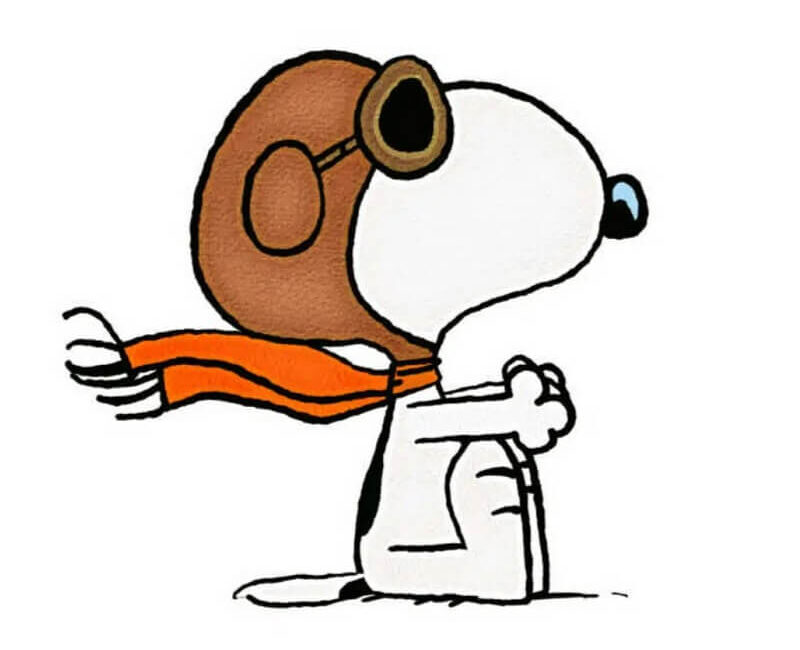
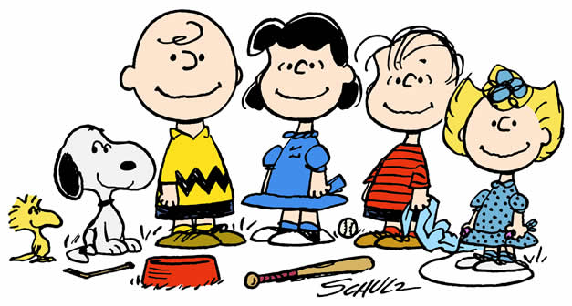

Historia de Snoopy
El Nacimiento (1950)

Snoopy fue creado por el caricaturista estadounidense Charles M. Schulz. Hizo su debut en la tira cómica Peanuts el 4 de octubre de 1950, apenas dos días después del lanzamiento oficial de la historieta.
La inspiración para Snoopy provino de un perro llamado Spike que Schulz tuvo durante su adolescencia. Aunque al principio Snoopy era un perro común, con el tiempo se convirtió en uno de los personajes más queridos de los cómics gracias a su imaginación y personalidad única.
La Evolución Física y Mental

Durante sus primeros años, Snoopy caminaba en cuatro patas y actuaba como un perro normal. Sin embargo, poco a poco comenzó a desarrollar una personalidad más compleja.
En 1956 empezó a caminar sobre dos patas y a expresar pensamientos que los lectores podían leer. También comenzó a dormir sobre el techo de su caseta, una de sus características más famosas.
Sus Famosos Alter Egos

La imaginación de Snoopy lo llevó a crear múltiples identidades. Entre las más famosas se encuentran:
El Aviador de la Primera Guerra Mundial: lucha contra el Barón Rojo desde el techo de su caseta.
Joe Cool: un estudiante universitario relajado y popular.
El Novelista: siempre intentando escribir una gran historia con su máquina de escribir.
Línea del Tiempo
1950: Primera aparición de Snoopy.
1956: Comienza a caminar en dos patas.
1965: Aparece en especiales de televisión.
1966: Nace el famoso Aviador de la Primera Guerra Mundial.
1971: Aparece Joe Cool.
1984: Recibe una estrella en el Paseo de la Fama de Hollywood.
2000: Se publica la última tira original de Peanuts.
El Impacto de Snoopy en el Mundo

Snoopy se convirtió en uno de los personajes más reconocidos del mundo. Ha aparecido en películas, caricaturas, videojuegos, ropa, juguetes y parques temáticos.
Incluso la NASA adoptó a Snoopy como símbolo de seguridad en sus misiones espaciales, demostrando el enorme impacto cultural que ha tenido durante más de siete décadas.
¿Por Qué Sigue Siendo Tan Popular?
La popularidad de Snoopy se debe a su imaginación, sentido del humor y personalidad única. Aunque es un perro, sus sueños y aventuras permiten que personas de todas las edades se identifiquen con él.
Hoy en día continúa siendo uno de los personajes más queridos y famosos de la cultura popular.